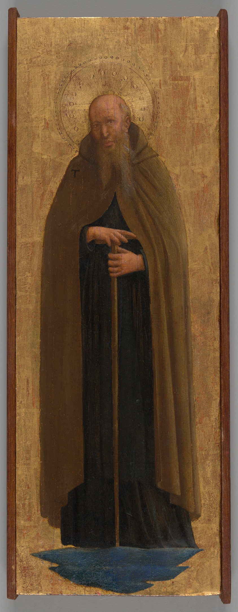
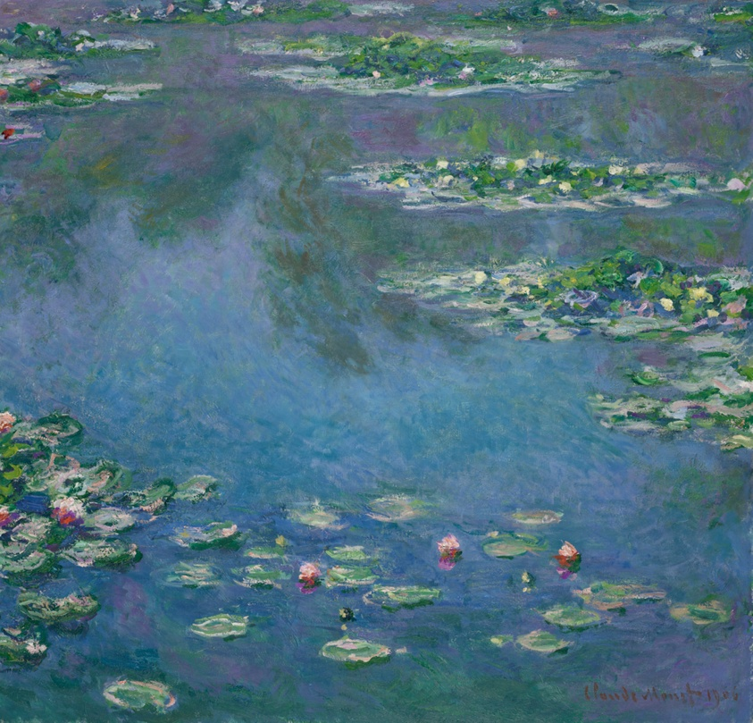
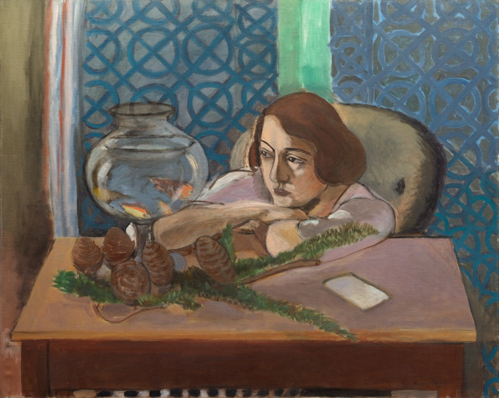
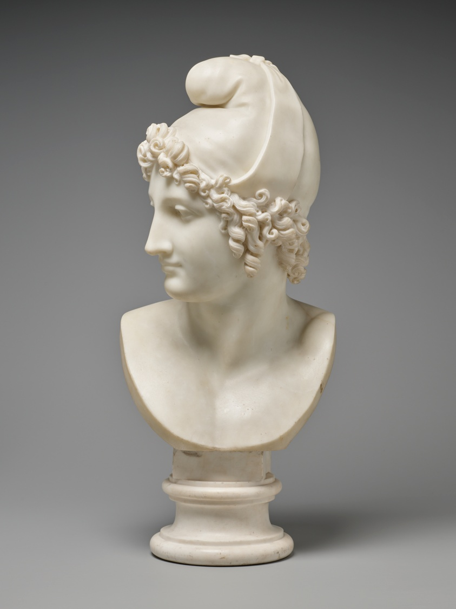

1440–1505
Renaissance Wing
Proportion & Devotion
Tempera on poplar and gold ground panels celebrating human anatomy, spiritual devotion, and early linear perspective in Italy and Flanders.
Four collections, four centuries — each arranged around a single period and its way of seeing.
Explore our four core curatorial wings. Each represents a pivotal era in artistic inquiry, preserved and documented with high-resolution imagery.

1440–1505Tempera on poplar and gold ground panels celebrating human anatomy, spiritual devotion, and early linear perspective in Italy and Flanders.

1871–1906Dissolving form into radiant colour. French open-air landscape studies, rainy Parisian boulevards, and pointillist optics by the water.

1893–1925Breaking the traditional picture plane through Fauvist color fields, expressive Northern European portraiture, and pure neoplastic geometry.

1778–1920Returning art to three physical dimensions: neoclassical Carrara marble, dramatic bronze combat studies, and monumental civic commemoration.
Each collection has its own logic — or you can let the museum deal the cards and draw five works at random from across the catalogue.
1 of 5